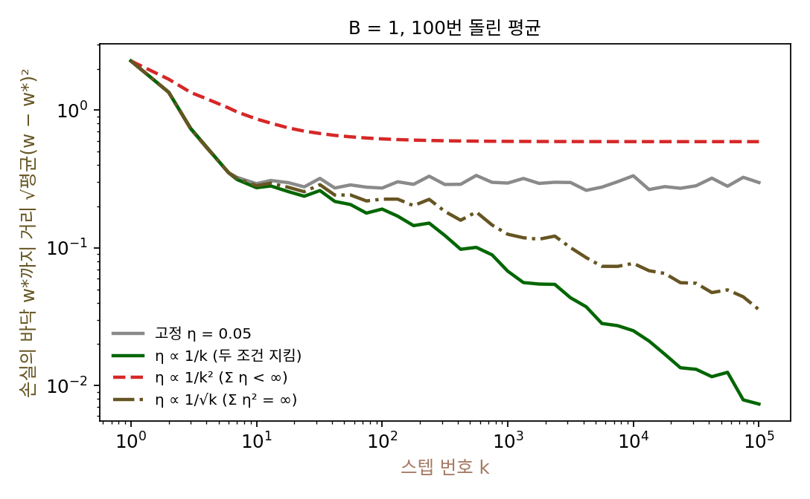

로빈스–먼로 조건: 학습률을 줄여 가야 손실의 바닥에 닿는다
학습률을 고정하면 손실은 노이즈 플로어에 머물고, 노이즈 플로어는 학습률에 비례했다. 그렇다면 바닥에 닿으려면 학습률을 0으로 줄여 가면 되지만, 처음부터 학습률을 아주 작게 하면 바닥까지 가는 데 끝없이 오래 걸린다. 스텝을 거듭하며 줄이되, 얼마나 빨리 줄여야 할까? 너무 천천히 줄이면 노이즈가 계속 남고, 너무 빨리 줄이면 바닥에 닿기 전에 스텝이 멈출 것 같다.
역사: 「1/n 꼴」의 수열
로빈스와 먼로의 1951년 논문이 학습률을 얼마나 빨리 줄여야 하느냐는 물음에 답했다. 그들은 옮기는 폭 aₙ에 두 조건을 걸었다. 하나는 aₙ²을 모두 더한 것이 유한하다는 것이고, 다른 하나는 aₙ을 모두 더한 것은 무한하다는 것이다. 그리고 aₙ = 1/n이 두 조건을 모두 만족한다고 적고, 이런 수열을 「1/n 꼴의 수열(sequence of type 1/n)」이라 불렀다. 두 사람은 자신들의 방법이 가장 효율적이라고 주장하지는 않으며, 결과는 적어도 확률적 근사라는 주제가 쓸모 있고 더 연구할 만하다는 것을 보여 준다고 겸손하게 적었다.
이듬해 잭 키퍼(Jack Kiefer)와 제이컵 울포위츠(Jacob Wolfowitz)가 같은 학술지에 「회귀 함수의 최댓값의 확률적 추정(Stochastic Estimation of the Maximum of a Regression Function)」을 냈다. 로빈스와 먼로는 평균이 정해진 값이 되는 곳을 찾았는데, 키퍼와 울포위츠는 평균이 가장 큰 곳을 찾았다. 가장 큰 곳에서는 그래디언트가 0이지만 그래디언트를 직접 잴 수는 없으므로, 그들은 가까운 두 점에서 노이즈 섞인 결과를 하나씩 얻어 두 결과의 차이로 그래디언트를 어림했다. 두 점의 간격도 스텝과 함께 줄여야 해서 조건이 하나 더 붙었다. 그래디언트를 직접 재지 않고 함숫값의 차이만 쓴다는 점에서 0차 최적화와 닮은 방법이다. 오늘날 신경망을 미니배치로 학습시키는 일도 두 논문이 연 확률적 근사의 틀 안에 있다.
학습률 스케줄 넷으로 10만 스텝
로빈스와 먼로의 두 조건이 각각 무엇을 막는지 보려고, 배달 1000건 회귀를 배치 크기 1로 10만 스텝 걸으며 학습률을 줄이는 방식 넷을 비교했다. 모두 학습률 0.05에서 시작한다. 고정은 0.05 그대로, 1/k 꼴은 0.05 × 100/(k + 100), 1/k² 꼴은 0.05/(1 + k/3)², 1/√k 꼴은 0.05 × √(100/(k + 100))이다. 씨앗 100개로 돌려 바닥까지의 거리를 제곱평균제곱근(√평균(w − w*)²)으로 쟀다.
| 학습률 스케줄 | 10만 스텝의 Ση | Ση² | k = 100 | k = 1000 | k = 10⁴ | k = 10⁵ |
|---|---|---|---|---|---|---|
| 고정 0.05 | 5000 | 250 | 0.272 | 0.296 | 0.334 | 0.298 |
| 1/k 꼴 | 34.6 | 0.251 | 0.191 | 0.0678 | 0.0250 | 0.00734 |
| 1/k² 꼴 | 0.178 | 0.00401 | 0.619 | 0.594 | 0.592 | 0.591 |
| 1/√k 꼴 | 306 | 1.73 | 0.226 | 0.126 | 0.0772 | 0.0356 |
고정은 100스텝 만에 노이즈 플로어 0.3 둘레에 닿고 그 뒤로는 나아지지 않는다. 1/k 꼴은 스텝을 열 배 할 때마다 거리가 약 √10 = 3.2분의 1로 줄어 10만 스텝 뒤 0.007에 이른다. 1/k² 꼴은 처음 몇십 스텝 사이에 학습률이 거의 0이 되어 0.59에서 그대로 멈춘다. 노이즈가 없는 경사하강에 같은 학습률 스케줄을 써도 w = 3.52에서 멈추어, 바닥까지 0.46을 남긴다.
두 조건을 식으로 적으면 다음과 같다. 이 두 조건을 로빈스–먼로 조건 (학습률을 줄여 가는 확률적 경사하강이 바닥에 모이기 위한 두 조건 / Robbins–Monro conditions)이라 한다.
첫째 조건은 멀리 갈 수 있게 한다. 노이즈를 빼면 스텝마다 바닥까지의 거리가 (1 − ηₖa)배가 되고, 이 배율들을 모두 곱한 것이 0으로 가려면 ηₖ의 합이 무한해야 한다. 합이 유한하면 출발점이 아무리 멀어도 갈 수 있는 거리에 상한이 생긴다. 둘째 조건은 노이즈를 잦아들게 하는데, 스텝마다 노이즈가 ηₖξₖ만큼 떠밀고, 서로 따로인 노이즈의 분산은 더해지므로 쌓이는 분산은 ηₖ²의 합에 비례한다. 이 합이 유한해야 쌓인 노이즈가 끝없이 커지지 않는다. 1/k 꼴은 합이 로그처럼 끝없이 커지고 제곱의 합은 유한해서 두 조건 사이에 꼭 맞는다.

ML에서: 신경망은 1/k 대신 무엇을 쓰나
신경망 학습에서 학습률을 1/k 꼴로 줄이는 일은 드물다. 학습할 스텝 수를 미리 정해 두고 그 안에서 줄이는 학습률 스케줄을 쓰는데, 그 이야기는 다음 개념인 학습률 스케줄에서 한다. 그래도 로빈스–먼로 조건은 실무의 두 습관을 설명한다. 학습 끝에 학습률을 줄이면 손실이 한 번 더 내려가는 것은 노이즈 플로어가 학습률에 비례하기 때문이고, 학습률을 너무 일찍 너무 많이 줄이면 손실이 내려가다 멈추는 것은 학습률의 합이 모자라기 때문이다. 다른 길도 있다. 보리스 폴랴크(Boris Polyak)와 아나톨리 유디츠키(Anatoli Juditsky)는 1992년 논문 「평균으로 확률적 근사를 빠르게 하기(Acceleration of Stochastic Approximation by Averaging)」에서 마지막 스텝 대신 지나온 스텝들의 평균을 답으로 내자고 했다. 보투(2010)가 큰 데이터에서 확률적 경사하강의 장점을 정리하며 소개한 「평균 낸 확률적 경사하강」이 이 방법이다. 평균을 내면 무엇이 달라지는지는 아래 문제 9에서 직접 재 본다.
문제 7. 별점 평균을 한 건씩 고치기
새로 연 가게에 별점(1~5점)이 한 건씩 들어온다. 사장은 평균 별점 m을 새 별점 s가 들어올 때마다 m ← m + aₙ(s − m)으로 고친다(n은 지금까지 들어온 별점 수, 처음 m = 0). (가) aₙ = 1/n이면 열 건 뒤의 m은 첫 열 건의 산술 평균과 어떤 관계인가? (나) aₙ = 0.1로 고정하면 1000건 뒤 m은 어디에 있고, 마지막 100건 동안 얼마나 오르내리는가? (다) aₙ = 1/n²이면? (이 책에서 씨앗을 고정해 만든 별점 1000건의 실제 평균은 3.603이다.)

코드로 돌려 보면 1/n은 열 건 뒤 3.500, 1000건 뒤 3.603으로 실제 평균에 딱 닿아요. 고정 0.1은 10건 뒤 2.225, 1000건 뒤 3.368이에요. 고정 0.1이 더 빨리 따라갈 줄 알았는데 이상하네요.

1/n일 때 열 건 뒤의 3.500은 어디서 본 숫자 같지 않아요?

첫 열 건의 산술 평균이 3.500이에요! 같네요. m ← m + (1/n)(s − m)이 그냥 「평균을 한 건씩 고쳐 계산하는 식」이었어요.

고정 0.1은 지수 이동 평균이라 최근 열 건쯤만 기억해. 그래서 1000건 뒤에도 마지막 100건 동안 1.03만큼 오르내려. 1/n은 0.017밖에 안 움직이고. 이건 노이즈 플로어야.

1/n²은 어떻죠? 더 빨리 줄이니 더 빨리 맞을까요?
1/n²은 1000건 뒤 2.889예요. 실제 평균 3.603과 한참 다른데 마지막 100건 동안 0.0001밖에 안 움직여요. m이 거의 굳어 버렸어요.
왜 3.6까지 못 갔을까요? aₙ을 다 더하면 얼마죠?

Σ1/n²은… π²/6 = 1.64로 유한해요. 처음 0에서 3.6까지 가야 할 거리를 다 못 가는 거네요.
로빈스–먼로의 첫째 조건이 깨진 경우구나.

수렴하는 급수와 발산하는 급수의 경계가 Σ1/n이라는 걸 해석학에서 배웠는데, 그 경계에 딱 맞춘 게 평균이었어요.

학점 평균 내는 앱도 과목이 하나씩 늘 때마다 이렇게 고치고 있겠네요. 첫 학기 성적이 끝까지 나머지와 같은 무게로 남는 것도 1/n이라서였어요.
문제 8. 학습률의 합이 유한하면 어디서 멈추나
배달 1000건 회귀를 참 그래디언트로 내려가는데(노이즈 없음), 학습률을 ηₖ = 0.05/(1 + k/3)²로 줄인다. w = 0에서 출발하고 바닥은 w* = 3.985, 곡률은 a = 10.37이다. (가) 스텝마다 바닥까지의 거리에 곱해지는 배율을 모두 곱하면 얼마인가? (나) 그러면 끝까지 걸어도 w는 어디서 멈추는가? (다) 배율의 곱을 exp(−aΣηₖ)로 어림하면 얼마이고, 왜 실제 곱과 조금 다른가?
10만 스텝까지 곱하니 Π(1 − ηₖa) = 0.1164예요. 처음 거리 3.985에 곱하면 0.464가 남으니까 w = 3.521에서 멈춰요. 직접 돌린 경사하강도 3.5216에서 멈췄어요.
스텝을 백만, 천만으로 늘리면 더 가지 않을까요?

뒤쪽 학습률은 0.05/(1 + k/3)²라서 k = 10만이면 4.5 × 10⁻¹¹이에요. 아무리 많이 걸어도 거의 안 움직이네요.
Σηₖ가 0.178로 유한하니까 그래.
(다)의 어림 exp(−aΣηₖ)로는 얼마죠?

exp(−a × 0.178) = 0.158이에요. 그런데 실제 곱 0.116이 더 작네요?
1 − x와 e^(−x)는 어느 쪽이 크죠? 첫 스텝의 ηa는 얼마였고요?
1 − x ≤ e^(−x)니까 곱은 늘 어림보다 작아요. 첫 스텝의 ηa = 0.52가 작지 않아서 1 − x가 e^(−x)보다 한참 작은 거고요.

거꾸로, 곱이 0으로 가려면 무엇이 필요하죠?
로그를 취하면 곱이 합이 되니까… ηₖa가 작을 때 곱이 0으로 가는 것과 Σηₖ가 무한한 것이 같아요.
그럼 첫째 조건은 노이즈와 상관없이, 노이즈가 없어도 필요한 조건이네.
응. 무한곱이 0으로 가는 조건을 급수로 바꾸는 계산이 해석학 연습문제에 있었어.
학습률을 지수로 빨리 줄이는 스케줄을 써 보다가 손실이 어느 순간 평평해졌는데, 수렴한 줄 알았던 게 사실은 스텝이 멈춘 거였을 수도 있겠네요.
문제 9. 학습률을 고정한 채 스텝의 평균을 내면
배달 1000건 회귀를 배치 크기 1, 학습률 0.05로 고정해 3000스텝 걷는다. (가) 마지막 스텝의 w는 바닥에서 얼마나 떨어져 있는가? (나) 뒤쪽 2000스텝의 w를 평균 내 답으로 쓰면? (다) 평균을 낸 답은 왜 더 가까운가? 노이즈 플로어와 이어서 설명하라. 신경망에서는 무엇이 걸리겠는가?
씨앗 20개로 돌리면 마지막 w의 거리가 0.305예요. 노이즈 플로어 그대로요. 평균 낸 w는 0.0139로 스무 배쯤 가까워요. 씨앗 1에서는 마지막이 4.038, 평균이 3.940이고요.
학습률을 줄이지 않았는데 어떻게 가까워졌을까요?
바닥 둘레를 돌아다니는 w가 바닥의 양쪽에 고르게 흩어져 있으니까, 평균을 내면 흩어진 것이 서로 지워지는 것 아닐까?
그럼 2000개면 따로 뽑은 2000개처럼 훨씬 더 지워져야 하잖아.
이웃한 스텝들은 서로 비슷하니까 그만큼은 안 지워지겠지. 그래도 0.3이 0.014로 줄었어.
초과 손실로 보면요?

마지막 w는 0.481, 평균 낸 w는 0.0010이에요. 학습률을 줄이는 대신 평균으로 노이즈를 지운 거예요. 폴랴크와 유디츠키가 마지막 스텝 대신 평균을 내자고 한 게 이거네요.
그런데 신경망이면 평균 낸 파라미터가 정말 좋은 파라미터일까요? 이 회귀는 바닥이 하나라 괜찮지만, 손실에 골짜기가 여럿이면 두 골짜기의 파라미터를 평균 낸 곳은 언덕 위일 수도 있잖아요.
좋은 걱정이에요. 그래서 신경망에서는 한 골짜기 안에서 걸은 스텝들, 곧 학습의 마지막 구간의 파라미터만 평균 내는 방법을 써요. 평균 낸 파라미터가 왜 오히려 좋은 곳에 놓이는지는 옵티마이저가 고르는 해와 일반화의 관계를 다룰 때 다시 볼 물음이에요.
스텝 평균을 답으로 내는 건, 시험 점수를 한 번 본 걸로 정하지 않고 여러 번 본 평균으로 정해서 운을 덜 끼게 하는 방법이네요. 다만 1학기와 2학기 범위가 다르면 평균이 이상해지고요.